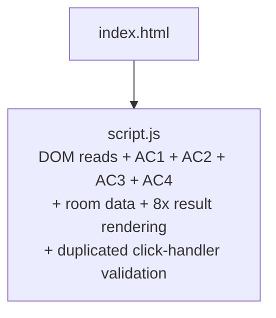
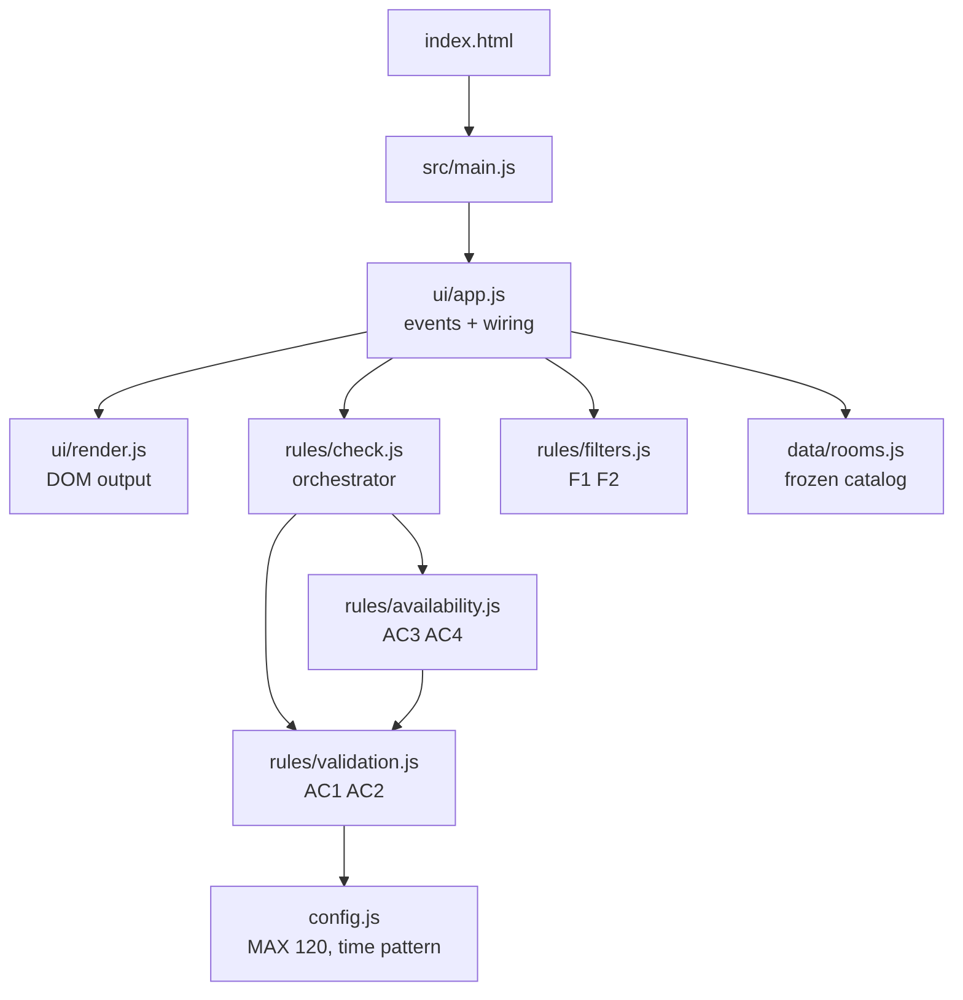
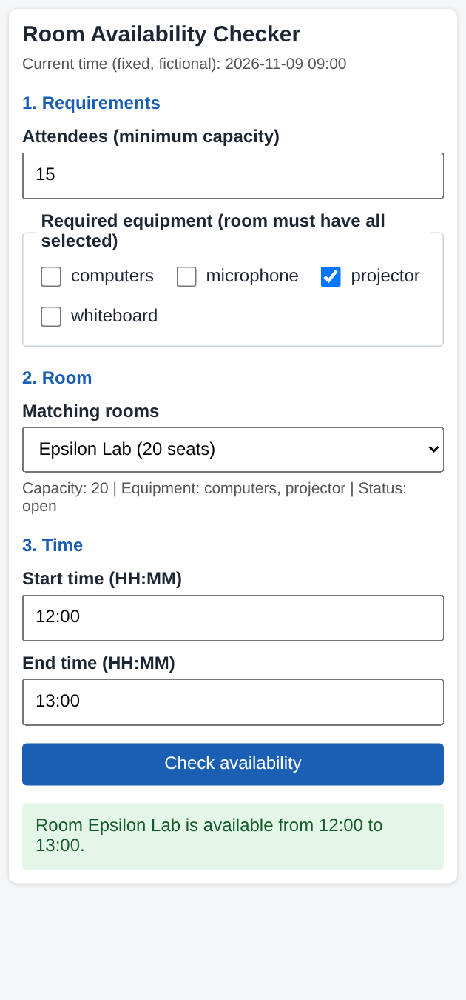
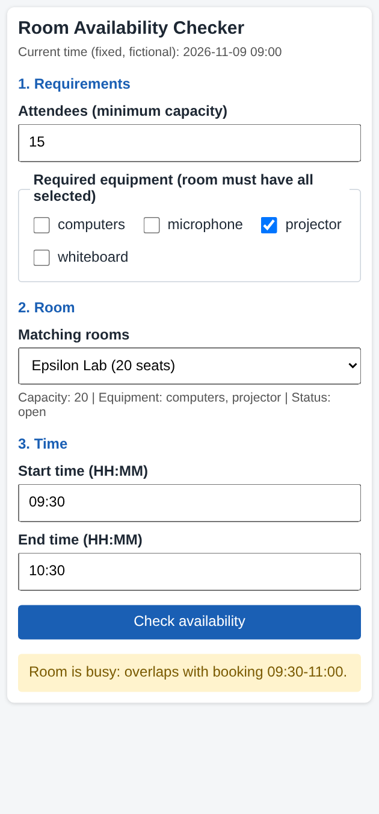
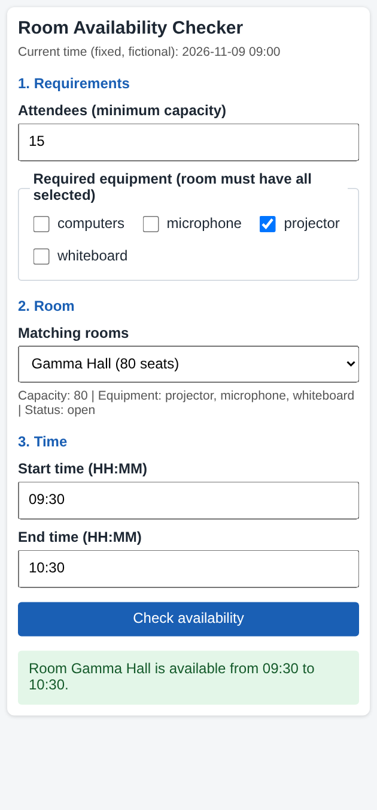
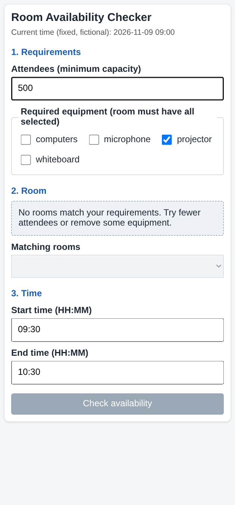

AI assistant used: Claude (Anthropic), model claude-sonnet-5-5, session date 2026-11-08.
Repository: v1-initial/ (baseline commit
b82d77c, tag v1-baseline),
v2-final/ (final). Run commands are in
README.md.
Baseline commit: b82d77c (tag v1-baseline).
All line numbers refer to that commit.
v1-initial/
├── index.html (38 lines) page markup + inline CSS; loads script.js
└── script.js (91 lines) everything else
├── room (L5-14) data: one room R101, 3 frozen bookings
├── NOW (L16) fixed "current time" constant
├── toMinutes(t) (L18) "HH:MM" -> minutes
├── checkAvailability() (L23) DOM read + AC1 + AC2 + AC3 + AC4 + DOM write
└── click handler (L71) DOM read + partial AC1/AC2 re-check, then calls checkAvailability()docs/baseline-v1-results.txt: 9/9 manual-equivalent
checks pass (AC1, AC2 at 120/121, AC4 overlap and touching). Automated
test suite: none (0 tests). Size: 38 + 91 = 129 lines.
| # | Risk | Evidence | Impact |
|---|---|---|---|
| R1 | Duplicated validation | script.js click handler L77-89 re-implements the
empty-input check and the 120-minute check that
checkAvailability() already does (L29-L47). The literal
120 and the message "Booking cannot be longer than 120
minutes." appear twice (L43/L45 and L84/L86). |
Changing the limit in one place and forgetting the other creates inconsistent behaviour. |
| R2 | Business rules mixed with DOM | checkAvailability() reads
document.getElementById (L24-L26) and writes
box.className/box.textContent in 8 places
(L30-L86). Rules cannot be called without a browser. |
Rules cannot be unit-tested in Node; every test needs a DOM. |
| R3 | Hard-wired single-room data | checkAvailability() reads the global room
(L5) directly (L48, L55-L60). It takes no room parameter. |
Adding more rooms (new feature) would force edits inside the rule code and risks using another room's bookings. |
| R4 | Duplicated rendering logic | 8 separate box.className = ...; box.textContent = ...
pairs (L30, 37, 44, 51, 61, 67, 78, 85). |
Any change to result styling or ARIA must be repeated 8 times. |
| R5 | Dead / unused config | NOW (L16) is declared but never read; the fixed time
exists only in the HTML text (index.html L28). |
Misleading constant; two sources of truth for "current time". |
| R6 | Time regex duplicated inline | The same regex literal appears twice in one condition (L29). | Minor, but easy to desynchronize. |
| Priority | Step | Fixes | Reason |
|---|---|---|---|
| P1 | Add automated tests around the current behaviour (AC1-AC5) | - | Safety net before any refactoring |
| P1 | Extract constants to config.js (MAX_DURATION=120,
NOW) |
R1, R5 | Smallest change, removes magic numbers |
| P1 | Extract time validation to rules/validation.js, single
source for both checks |
R1, R6 | Removes the duplicated validation |
| P1 | Extract overlap/blocked logic to rules/availability.js,
taking room as an argument |
R2, R3 | Needed before multiple rooms |
| P2 | Move room data to data/rooms.js (4+ rooms, each with
own bookings) |
R3 | Prepares the new feature |
| P2 | One render.js function for results |
R4 | Single place for UI feedback |
| P2 | Add rules/filters.js (capacity, equipment), room
selector, empty state |
New F1-F5 | The new feature, built on clean modules |
| P3 | Tests for F1-F5, integration test, quality comparison table | - | Evidence for the report |
Order rule: refactor one step at a time, run tests and review the diff after each, commit after each.
Suggestion (AI): For testing the UI, the assistant
proposed a small fake DOM as the main approach and mentioned
jsdom as an optional alternative for more realistic browser
tests.
Decision: partly accepted, partly rejected.
tests/helpers/fake-dom.js)
through initApp(fakeDocument), plus a manual browser smoke
check.jsdom. The project has no dependencies in
package.json.Reason: The assignment requires clear setup, run and
test commands. With zero dependencies, npm test
(node --test) works on any machine with Node 20+ and does
not need npm install. The "no heavy frameworks" constraint
also points to keeping test tools minimal.
Trade-off I accepted: A fake DOM can differ from a real browser. To reduce this risk, the fake DOM is very small, and I use a manual UI checklist (change room, change filter, empty state, narrow screen at about 375 px) before submitting.
Before (v1) - one file mixes UI, validation, rules and data:

After (v2) - rules know nothing about the DOM:

rules/*). Reason: they can be tested from Node with
node --test and no browser. Trade-off: one more layer
(ui/app.js) to connect input to rules.config.js is the single source of the
120-minute limit. Reason: in v1 the number and its message were
duplicated (L43/L84). In v2 the error text is built from the constant,
so limit and message cannot diverge. Evidence:
grep -rn 120 src finds it only in
config.js.checkRoomAvailability(room, ...) receives the
room as an argument. Reason: a check can only see the bookings
of the room it was given, which prevents using another room's data.
Tested in rooms.test.js ("each room uses its own
bookings").deepFreeze in
data/rooms.js) for AC5. Reason: attempts to mutate bookings
throw TypeError in ES modules (strict mode), which tests
assert.doc is injected into
initApp. Reason: the UI controller is testable
with a 50-line fake DOM and no extra dependency such as jsdom.| Metric | v1 | v2 | How it was obtained |
|---|---|---|---|
| Automated tests | 0 | 41 passed / 41 | node --test in v2-final, output in
docs/test-results.txt |
| Manual checks | 9/9 pass (AC1, AC2, AC4) | 9/9 equivalent checks covered by tests | docs/baseline-v1-results.txt (harness run on v1) |
| Places where the 120-minute limit is defined | 2 (script.js L43, L84) |
1 (config.js) |
grep -n 120 in v1, grep -rn 120 src in
v2 |
| Duplicated validation blocks | 2 (handler + checkAvailability) |
0 (validateTimeRange only) |
code review of v1 L24-L47 vs L77-L89 |
| Result-rendering call sites | 8 (box.className = ...) |
1 (renderResult) |
grep -n "box.className" script.js vs
src/ui/render.js |
| DOM access inside rule code | yes (getElementById x6) |
none | grep -rn getElementById src/rules src/data src/config.js
= 0 matches |
| Files / modules | 2 files (129 lines) | 11 source files + 5 test files | wc -l, ls |
| Rooms | 1 | 5 (1 blocked), each with own bookings | src/data/rooms.js |
| Mobile layout | responsive, 1 breakpoint | responsive; no horizontal overflow at 375 px | Playwright run, docs/browser-check-results.txt,
screenshots in docs/ |
Line count grew (129 -> 468 incl. HTML/CSS) because v2 adds features (rooms, filters, empty state). Size was not a quality goal.
runCheck validates time first, so a blocked room with an
invalid range shows the time error, not "blocked". This is covered by a
test (validation errors come before availability) and was
kept on purpose.
Command: cd v2-final && node --test (Node 22, no
dependencies). Raw output: docs/test-results.txt.
# tests 41
# suites 0
# pass 41
# fail 0
# cancelled 0
# skipped 0
# todo 0
# duration_ms 255.162348Executed tests:
ok 1 - AC3: blocked room is reported as blocked, never available
ok 2 - AC3: blocked room wins even when it has no bookings
ok 3 - AC4: overlapping interval is busy and names the conflicting booking
ok 4 - AC4 boundary: request that ends exactly when a booking starts is free (touching)
ok 5 - AC4 boundary: request that starts exactly when a booking ends is free (touching)
ok 6 - AC4 boundary: one minute of overlap is busy
ok 7 - AC4: request fully inside an existing booking is busy
ok 8 - runCheck: free slot returns ok with room name in message
ok 9 - runCheck: validation errors come before availability (blocked room + 121 min -> TOO_LONG)
ok 10 - runCheck: blocked room returns BLOCKED error
ok 11 - F1 boundary: exact capacity passes, one more attendee fails
ok 12 - F1: insufficient capacity excludes small rooms
ok 13 - F2: room must have ALL selected equipment
ok 14 - F2: missing a single required item excludes the room
ok 15 - F1 + F2 combined
ok 16 - no criteria returns the whole catalog
ok 17 - F3: a blocked room can match filters but is never reported as available
ok 18 - F4: impossible criteria give an empty list
ok 19 - parseAttendees accepts empty and whole numbers, rejects the rest
ok 20 - getRoomById returns null for unknown ids
ok 21 - integration: initial state lists all rooms and selects the first
ok 22 - integration: filter -> select room -> check time -> result (free slot)
ok 23 - integration: busy slot and boundary touching through the UI
ok 24 - integration: invalid time shows a clear error (AC1/AC2/AC6)
ok 25 - F4 integration: impossible requirements show the empty state and disable checking
ok 26 - F5 integration: changing the room re-checks the same time for the NEW room
ok 27 - F5 integration: blocked room switch shows blocked error, not a stale 'available'
ok 28 - F5 integration: result is cleared when the filter removes the selected room
ok 29 - integration: invalid attendees value shows a filter error and keeps the old list
ok 30 - catalog has at least four rooms with all required fields
ok 31 - catalog contains at least one blocked room
ok 32 - AC5: booking data is immutable (assignment and push throw)
ok 33 - AC5: running checks does not change room data
ok 34 - listEquipment returns sorted unique items from the catalog
ok 35 - each room uses its own bookings: same slot, different result per room
ok 36 - toMinutes converts HH:MM to minutes
ok 37 - AC1: empty input is rejected
ok 38 - AC1: wrong format is rejected
ok 39 - AC1: start equal to end or after end is rejected
ok 40 - AC2 boundary: exactly 120 minutes is accepted
ok 41 - AC2 boundary: 121 minutes is rejected| Successful filter + free slot | Overlap -> busy |
|---|---|
 |
 |
| Room switch re-checks the same time | Unsuccessful filter -> empty state |
|---|---|
 |
 |
I used Claude Sonnet 5.5 (claude.ai chat and Claude Code) on 2026-11-08 to improve my project. I gave it the assignment PDF, a repository map of the old code, acceptance criteria AC1-AC6 and the constraints (no login, payments, APIs or database, fictional data only). I asked for small changes instead of a full rewrite.
Claude found real problems: the 120-minute rule duplicated in two
places, rules mixed with DOM code, and eight repeated rendering blocks.
I checked them with grep, then followed the plan step by step, one
commit per step. I rejected one suggestion: jsdom was offered as an
optional UI-testing tool, and I kept a small fake DOM so the project has
no dependencies. One AI statement was incorrect: the draft evidence text
described runCheck(state); I checked the code, found
runCheck(room, start, end) and corrected it. I also decided
myself that blocked rooms stay visible but are never shown as
available.
After each change I ran the tests; all 41 pass. I checked the page in a browser at 375 px width and reviewed every diff before committing. One strange result (a duration error after switching to the blocked room) turned out to be correct: the old time stayed in the fields and validation runs before availability.
The tests confirmed my boundary decisions (120 vs 121 minutes, touching intervals, exact capacity) and showed that room switching refreshes the result.
Next I would add browser-level tests, block bookings in the past and improve accessibility. Saving bookings was out of scope for this assignment.
| Field | Value |
|---|---|
| AI tool / model | Claude (Anthropic), claude.ai chat and Claude Code, model
claude-sonnet-5-5 |
| Date | 2026-11-08 |
| Student review | All outputs were reviewed by the student; see "Verification" |
| # | Prompt summary | Output used | Problems found / changes made |
|---|---|---|---|
| 1 | "Help with the assignment, give a full step-by-step plan" (+ assignment PDF) | Stage plan, acceptance-criteria list, test list | Plan listed jsdom as an optional UI-testing tool;
rejected, used an injected document + a small fake DOM (no
dependencies) |
| 2 | "Start step by step": create structure, recreate v1, baseline | v1-initial/ (recreated, not the
original Assignment #03 prototype), baseline harness |
v1 is a reconstruction; stated in the report |
| 3 | Analyze v1 for maintainability risks | 6 risks with line references, P1-P3 plan
(docs/01-codebase-analysis.md) |
Line references verified with grep -n; section 6 of
that file was corrected by the student to match what really
happened |
| 4 | Refactor and extend: config, validation, availability, rooms, filters, UI, tests | v2-final/ (4 commits, one per step) |
Browser check showed an apparent bug that was correct behaviour (validation before availability); documented |
| 5 | Draft metrics table and reflection | docs/02-design-and-metrics.md,
docs/03-ai-reflection.md |
Reflection was drafted by the AI; the student rewrote, corrected and finalized it |
| 6 | Gave repo map, AC1-AC6 and constraints; asked for risks, P1-P3 plan, file structure and test approach (claude.ai chat) | Risks, plan, fake-DOM test approach | The draft of section 6 contained an inaccurate claim
(runCheck(state)); I checked the code and corrected it |
node --test in v2-final: 41 tests, 41 pass
(docs/test-results.txt).docs/baseline-v1-results.txt).docs/browser-check-results.txt,
screenshots).git log / git diff for every step;
grep for duplicated constants and DOM access in rules.tests/integration.test.js
found while re-reading the diff.